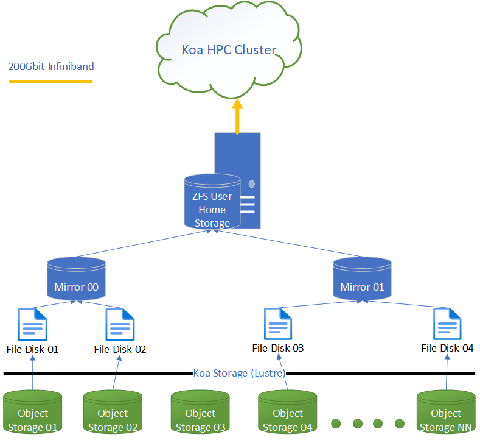

Home Directory on Koa 🏠
Your home directory is a permanent storage space on Koa, with a 50 GiB limit. It's designed for storing personal files like configurations and applications, not for running jobs.
Key Points
- Storage Limit: 50 GiB per user.
- Purpose: Best for configuration files and permanent files.
- Performance: It is not a high-performance file system.
- Job Usage: Avoid using your home directory for job inputs and outputs.
- Recommendation: Use the koa_scratch file system for running jobs. After a job is finished, move or copy any files you want to keep from koa_scratch to your home directory or an external backup.
-
Monitor Usage: Use the usage command or check the message you see when you connect to Koa via SSH. Hitting your 50 GiB limit can slow down performance for everyone.
-
No Backups: Koa does not back up your home directory data. You are responsible for backing up your own important files to a different location (e.g., a private GitHub repository).

Callout
Additional details about home storage can be found in our online documentation.